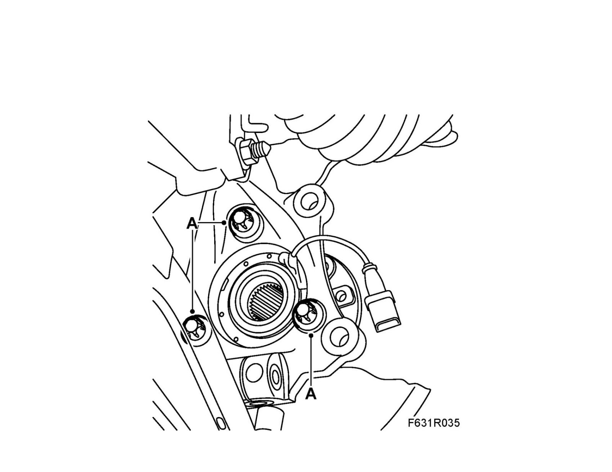
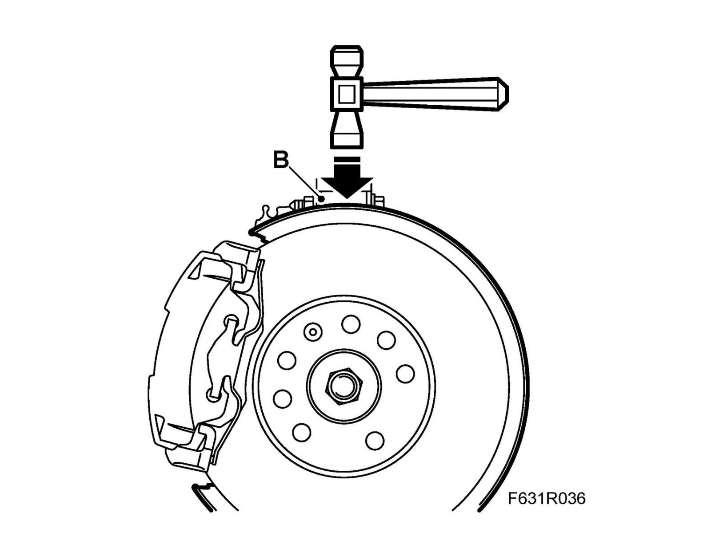

Metallic Noise From Front End/Brakes
Metallic noise from front end/brakesConditions
15", 16" or 16"+ brake system.
Fault symptom
Metallic noise from front end/brakes. The noise can be misinterpreted as a faulty/damaged wheel bearing.
The noise occurs during slow driving, when turning the steering wheel and, in some cases, when the brakes are applied lightly.
Cause: The brake anchor plate moves and scrapes against the steering swivel member.
Procedure
1. Slacken the wheel hub bolts (A).

2. Carefully use a rubber mallet to tap the top of the brake anchor plate (B) until it is in its bottom position.

3. Tighten the wheel hub bolts.
Tightening torque 90 Nm +45° (66 lbf ft +45°)